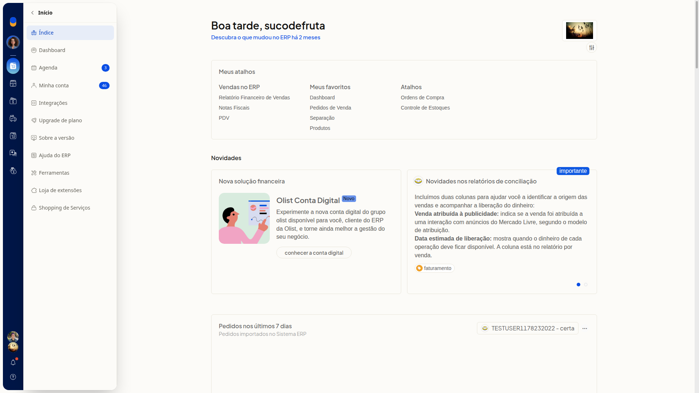
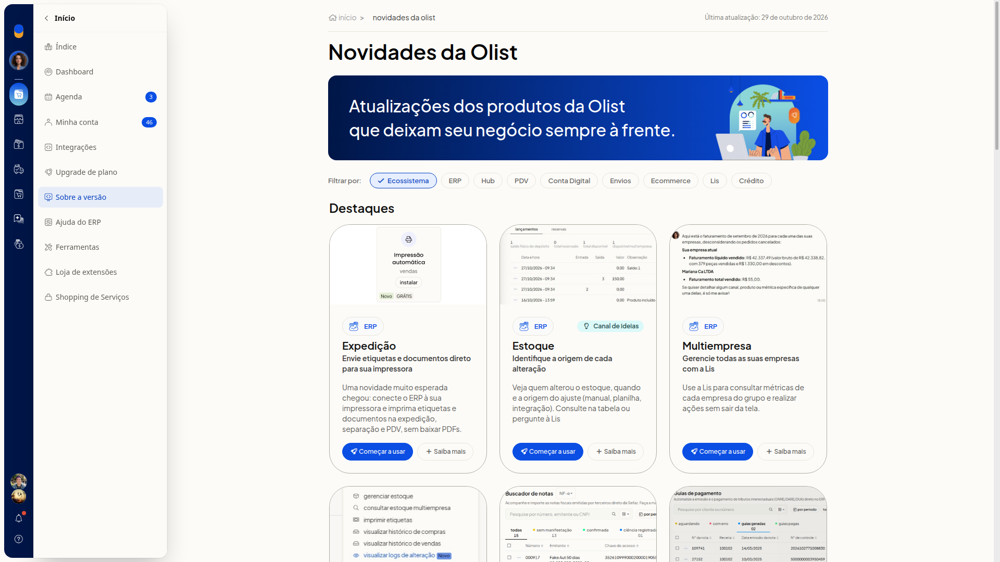
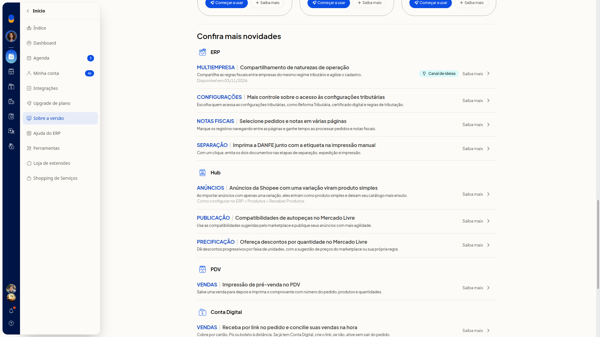
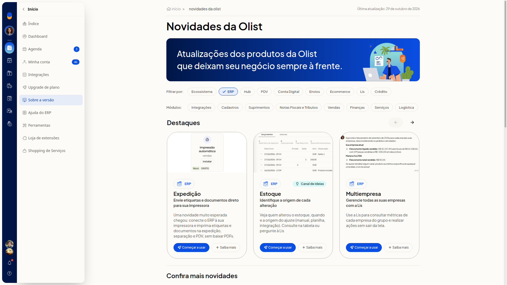
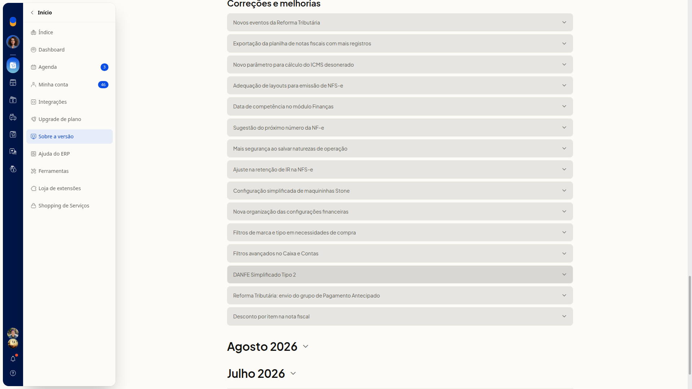
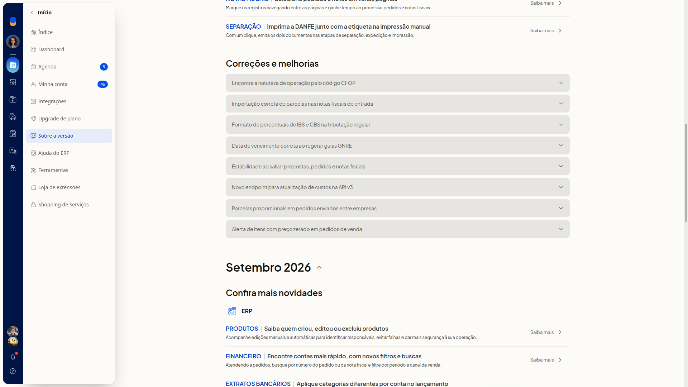

Sobre a versão: novidades e atualizações
Instruções
-
Acesse Início > Sobre a versão.

-
Leia, em Novidades da Olist, a data da última atualização, os Destaques e a lista Confira mais novidades. A lista reúne novidades agrupadas por produto. Cada novidade pode trazer Começar a usar, Saiba mais ou Canal de ideias.


-
Clique em Ecossistema, ERP, Hub, PDV, Conta Digital, Envios, Ecommerce, Lis ou Crédito. A lista passa a mostrar as novidades do produto escolhido.
-
Selecione ERP para ver as abas de Módulos, a seção Correções e melhorias e os grupos por mês. As abas de Módulos são Integrações, Cadastros, Suprimentos, Notas Fiscais e Tributos, Vendas, Finanças, Serviços e Logística.

-
Role até os grupos de mês, como Setembro 2026, Agosto 2026 e Julho 2026.

-
Clique no mês para expandir, como Setembro 2026. A página mostra mais novidades daquele mês e outro bloco Correções e melhorias. Você vê o histórico de atualizações daquele período.

Resultado
A página Novidades da Olist mostra as atualizações dos produtos da Olist, com a data da última atualização, os filtros de produto, Destaques e Confira mais novidades.
Informações adicionais
O histórico não usa o título histórico de versões
As atualizações aparecem em grupos de mês e na lista Confira mais novidades. A página não traz uma seção com o título histórico de versões.